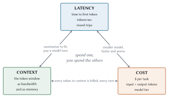
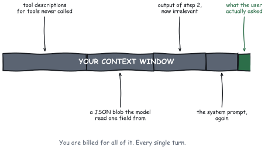
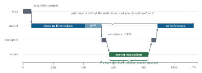
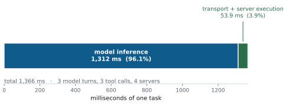
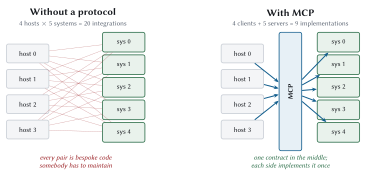

A Primer on Latency, Tokens, and Context
Everybody quotes that line. Almost nobody remembers what happens next, which is that the two of them proceed to fly recklessly, get chewed out, and eventually lose an aircraft. The need for speed is not a strategy. It is an appetite. What turns it into engineering is knowing which knob actually moves the aircraft.
So before we look at a single byte of the Model Context Protocol, we are going to spend a chapter on the physics. Not because physics is fun, though it is. Because every design decision in the rest of this book is a trade against one of exactly three budgets. Miss that, and you will spend three weeks optimising the wrong thing. I have done this. I have watched a very good team spend a sprint moving a server from Python to Go, ship it, measure it, and discover they had improved end-to-end task latency by approximately one half of one percent.
They were not stupid. They were optimising the only layer they could see.
The three budgets
Every agentic application spends three things. Not two. Not four. These three, and they are coupled, so you cannot economise on one without paying in another.

Latency
Wall clock, from the user pressing enter to the user having an answer. It decomposes into pieces you must learn to name separately, because they behave completely differently:
- Time to first token (TTFT)
-
How long the model thinks before it emits anything. Dominated by prompt processing, so it grows with how much context you sent. This is the number your users feel as “is it broken?”
- Tokens per second
-
The generation rate once it starts. Roughly constant for a given model, and roughly outside your control.
- Round-trip time of one loop iteration
-
Model turn, plus tool call, plus the model reading the result. This is the unit that actually matters, and it is the one nobody measures.
The third one is the whole ballgame. A single agent task is not one model call. It is a loop, and every trip round that loop pays for a full model turn.
Context
The token window is your bandwidth. It is also your memory, which is an unusual and slightly horrible property: the same finite resource stores the conversation, the tool catalogue, the system prompt, and every result you have retrieved so far. Fill it with junk and there is no room for the task.
Worse, it is not a one-time cost. Anything sitting in context is re-sent and re-processed on every single turn. A tool description you added in March is being paid for, right now, on a request that will never call it.

Cost
Dollars per task, and it deserves to be a first-class metric rather than something finance discovers in the quarterly. It is nearly a linear function of context: input tokens times input price, plus output tokens times output price, summed over every turn in the loop.
Which means context bloat is not merely a memory problem. It is a recurring bill, and it scales with your traffic, which is exactly the direction you were hoping your traffic would scale.
Anatomy of one loop iteration
Here is where the time goes. This is the diagram the rest of the book keeps returning to, so it is worth staring at for a minute.

Read it left to right:
The host assembles context. Conversation history, system prompt, and the merged tool catalogue from every connected server. Cheap in time. Ruinously expensive in tokens, which we will get to.
The model thinks. Time to first token, then generation. It emits a tool-call intent: a name and some arguments.
The host serialises and sends. JSON-RPC, over stdio or HTTP. Microseconds of CPU, plus whatever the network costs.
The server executes. Your actual business logic. The part you own, the part you profile, and usually the smallest slice on the chart.
The result comes back and re-enters context. And now the model has to read it, which means the whole prompt gets processed again.
The model thinks again. Another full turn. This is step 2 again, and it costs what step 2 cost.
Steps 5 and 6 are the expensive ones and they are the ones people forget, because they do not look like work. Nothing is executing. But a tool result entering context means the next model turn processes a longer prompt, and you pay another TTFT, and you are billed for every token again.
What the proportions actually are
Enough theory. Meridian, the reference application that ships with this book, runs a three-step task against four MCP servers: score an account for credit risk, screen it for fraud, and price a facility against the reference curve. Here is where its wall clock goes.

Now, before you conclude that the protocol does not matter and close the book: that green sliver is not the point. The point is the number of blue bands. There are three of them because the loop ran three times.
That reframing is the reason this book exists. Every technique in Chapter 17 is ultimately a way of deleting a blue band, or of stopping one from getting wider.
Round trips are the enemy
If you take one idea from this chapter, take this one.
An extra round trip is not an extra 20 milliseconds of network time. It is an extra model turn, because the model has to look at what came back and decide what to do next. On the Meridian baseline that is roughly 440 milliseconds, plus another 1,300 tokens of input, plus the cost of those tokens, every time.
Watch what that does to an MRTR interaction. Multi round-trip requests are how a 2026-era server asks the client a question mid-call, and Chapter 8 covers the mechanism properly. For now, only the price tag matters.
The transport delta is 34 milliseconds and looks harmless. The honest number is 375, because a round trip drags a model turn along behind it. This is why Chapter 8 spends so much energy on collecting inputs up front, and why “just add a confirmation prompt” is a more expensive suggestion than it sounds in a design review.
The same arithmetic runs the other way, which is the good news. When the model asks for three tools at once, it is telling you those three are independent. Run them together:
Notice that the speedup gets better as latency rises. Serial fan-out pays the sum of the latencies; parallel pays the maximum. The worse your network, the more the mistake costs you, which is a deeply unfair property of the universe and one you should exploit.
The N times M problem, and why a protocol is the answer
Let us back up and ask why MCP exists, because the answer is not “standardisation is nice.”
You have N AI applications and M systems worth connecting them to. Without a shared contract, you write N × M integrations, and worse, you maintain N × M integrations. Four hosts and five systems is twenty pieces of bespoke glue, each with its own auth, its own error handling, and its own person who understands it and is currently on holiday.

With a protocol you write N + M. Nine. Each host implements a client once, each system exposes a server once, and the contract in the middle is somebody else’s problem to specify.
This is the Language Server Protocol argument, and it is worth dwelling on why LSP worked, because it tells you what MCP has to get right. Before LSP, every editor implemented Go To Definition for every language. After LSP, editors implemented one client and languages implemented one server, and the ecosystem exploded. The waist was narrow enough to implement in a weekend and expressive enough to be worth implementing.
Why not a framework?
Fair question, since frameworks got there first.
A framework is a library you import. It works beautifully as long as everyone is in the same process, in the same language, on the same release cadence. The moment your risk team ships Python, your platform team ships TypeScript, and a vendor ships a binary you cannot recompile, a library is the wrong shape. You need something that survives a process boundary and a version skew.
That is a protocol. And once it is a protocol, it needs a wire format, a versioning story, and a deprecation policy, which is precisely what Chapter 2 is about.
Positioning against the alternatives
You have choices, and MCP is not always the right one. Here is my honest read as of mid-2026.
| Approach | Optimises for | Costs you |
| Provider-native function calling | Lowest possible friction; zero extra infrastructure | Rewrite per provider; no discovery, consent, or resource story |
| OpenAPI-driven tool use | Reusing an API surface you already document | REST shape is wrong for planning; catalogues balloon (Chapter 5) |
| Framework tool abstractions | Speed inside one language and one process | Version lock-in; no cross-organisation reuse |
| MCP | Many hosts, many systems, separate teams, real trust boundaries | A protocol to learn, and a host to run |
| A2A and agent-to-agent protocols | Agents negotiating with peer agents | Different problem; composes with MCP rather than replacing it |
The A2A comparison is the one people ask about most, so: they are orthogonal. MCP connects an agent to capabilities. A2A connects an agent to other agents. Chapter 14 builds a system that is both, because an agent that consumes MCP tools on one side and exposes MCP tools on the other is a completely ordinary thing to want.
Meet Meridian
Meridian is the instrumented reference application for this book. It is a financial analytics assistant, and it exists so that no claim in these pages has to be taken on faith.
meridian-risk-
Credit scoring. Tools, resources, prompts, MRTR approvals, the Tasks extension, and an MCP App template. The busiest server.
meridian-compliance-
Transaction review with a human in the loop, an immutable audit log, and (on request) the tool-poisoning payload from Chapter 19.
meridian-fraud-
Fast, read-only behavioural signals. The cheap parallel call.
meridian-marketdata-
Reference rates. Everything it returns is identical for every caller, which makes it the one place a shared gateway cache genuinely pays.
Plus a host, a client, an agent loop, a measurement harness, and 134 tests.
The whole thing has no third-party runtime dependencies, which was a deliberate and slightly obsessive decision. The SDKs are good and you should use them in production. But they were still shipping the handshake-era protocol while this book was being written, and a book about the wire that hides the wire behind somebody’s convenience wrapper is not doing its job. So meridian/protocol/ is a complete implementation of 2026-07-28 in about two thousand lines of standard-library Python. You can read all of it in an evening.
Try it now
git clone https://github.com/krimler/Building-Awesome-MCP-Apps
cd Building-Awesome-MCP-Apps
make test # 134 tests, roughly two seconds
make bench # every number in this bookIt also connects to real clients. This is Claude Code driving three Meridian servers at once:
claude -p "Assess ACC-1042 for risk, screen it for fraud, and get the 1Y and
5Y reference rates." --mcp-config .mcp.jsonRISK: 55.4 elevated
FRAUD: watch 1
CURVE: 1Y=3.96 5Y=3.68Those values match the fixtures exactly, which is the point. meridian/VERIFICATION.md records the full transcript.
There is a wrinkle in that command worth flagging now, because it shaped several later chapters. Claude Code, like most clients shipping in 2026, still opens a connection with an initialize handshake. Revision 2026-07-28 deleted that handshake. A strictly conforming modern server would therefore be completely correct and completely unusable. Meridian ships a dual-era bridge to handle exactly this, and Chapter 2 explains how the specification tells you to build one.
The baseline numbers
These are the figures every later chapter improves on. Write them down.
By Chapter 17 that task is meaningfully faster and cheaper, and every step of the change is attributed to a specific technique with a specific measurement. No hand-waving.
How to read the numbers in this book
Two things you are owed up front.
The machine
Every measurement was taken on Apple Silicon (arm64), macOS 15.7.3, Python 3.14.6. Your absolute numbers will differ. The ratios are what travel, and ratios are what the arguments rest on.
Transport figures are loopback figures. That is deliberate. Localhost has essentially no physics, which isolates protocol overhead so you can see it without your office wi-fi in the way. Here is what that isolation buys:
Subtract the control from the other two and you have transport cost with server execution removed. That subtraction is the single most useful trick in Chapter 16, and it is the only honest way to answer “is my server slow, or is my transport slow.”
Add your own network latency on top. A cross-region hop is 40 to 90 milliseconds and swamps all three rows, which is exactly why Chapter 3 cares about connection reuse and Chapter 17 cares about round-trip counts.
What is simulated
Model inference is simulated. A book cannot ship a reproducible language model, so Meridian uses a stub with a stated distribution:
TTFT_MEAN_MS = 340.0 # time to first token
TTFT_STDEV_MS = 90.0
MS_PER_OUTPUT_TOKEN = 7.5
CHARS_PER_TOKEN = 4.0 # rough, and rough is fine for ratios
INPUT_USD_PER_MTOK = 3.00
OUTPUT_USD_PER_MTOK = 15.00Those constants are calibrated against published figures for mid-size hosted models in mid-2026. They are stated here so you can disagree with them precisely rather than vaguely. Edit meridian/host/model.py, rerun make bench, and every number in the book moves with you.
Everything downstream of inference is measured for real: serialisation, transport, server execution, cache hit rates, round-trip counts, catalogue token cost, and process cold starts.
What you should do on Monday
Before you read another chapter, go and find out three things about the system you already have.
How many loop iterations does a typical task take? Not tool calls. Iterations. Each one is a full model turn. If the answer is more than four, that is where your latency lives and no amount of server tuning will touch it.
How many tokens does your tool catalogue cost per turn? Serialise your merged
tools/listoutput, divide the character count by four, and multiply by the number of turns in a task. Chapter 5 measures a catalogue that costs 4,371 extra tokens on every single turn, which worked out to $26 per thousand tasks in pure waste. That was a real catalogue, and it was not the worst one I have seen.What fraction of your requests could have been served from cache? If you are not honouring
ttlMs, the answer is most of them. Meridian avoided 577 of 600 resource reads with a 96.2 % hit rate on a realistic access pattern.
Three numbers. An afternoon. They will tell you which chapter to read next better than my table of contents can.
Where this is going
The rest of Part I gets you to the wire: the stateless architecture in Chapter 2, both transports byte by byte in Chapter 3, and OAuth as MCP actually uses it in Chapter 4. Part II is the primitives, one chapter each, every one of them following the same pattern of mechanics, then cost, then guidance.
But the frame never changes. Three budgets. Round trips are the enemy. Measure before you optimise, and measure the thing you actually ship.
Onward.